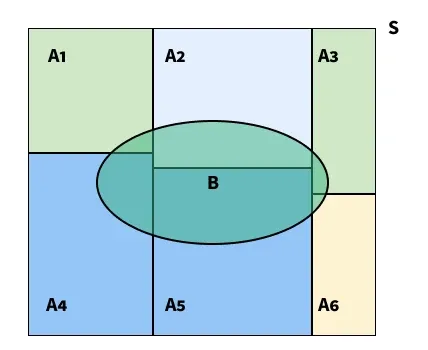
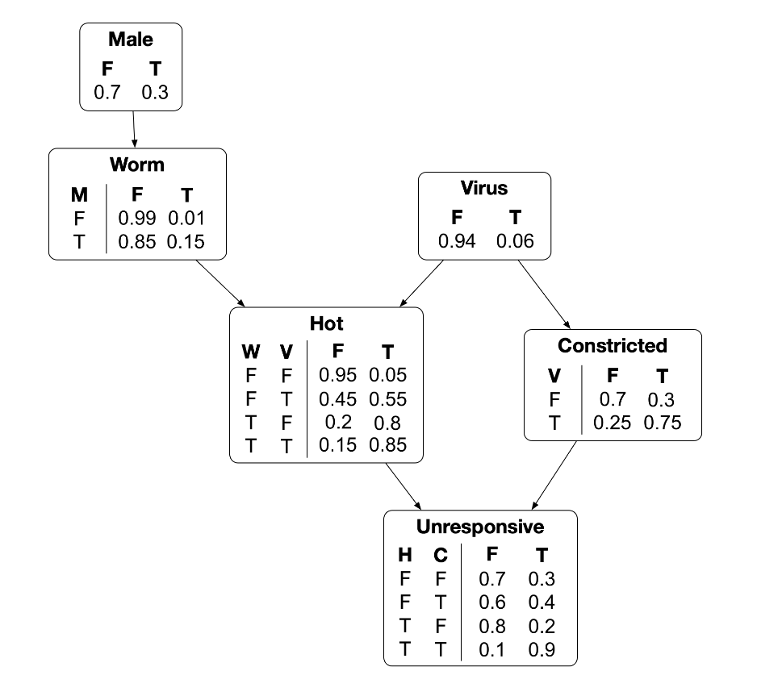
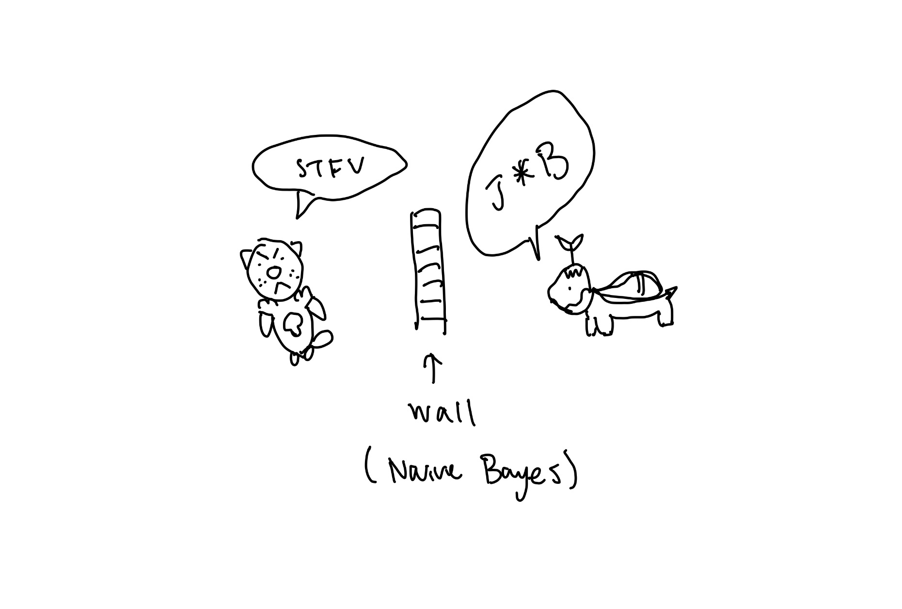

A Oshawott called Brandon is getting spammed by his friend, a Turtwig called Austin. Austin keeps harassing Brandon on whether he has a job yet. Brandon, being the great oshawott engineer he is, decides to build a spam filter. How? We'll use Bayes (more specifically, naive bayes)!
Before getting started, we need to understand probability vs likelihood:
At a high level, Bayes Thereom uses prior probability and the likelihood of it to calculate new probability (posterior).
You might find $P(A \cap B) = P(A, \ B)$ which is the same thing. Also, if you solve for $P(B|A)$, notice how Bayes is symmetric. By that same symmetry: $$ P(A \cap B) = P(A | B) \cdot P(B) = P(B | A) \cdot P(A) $$
The entire point is to update your posterior belief as with your prior belief. Your posterior will then become your prior. The prior is something that you come up with. It could be from a distribution or by elite ball knowledge.
More importantly since we are working with mainly conditional probabilities, the marginalization or $P(B)$ uses the law of total probability.

However, Bayes is not only just dependent on just A and B. We have have a bunch of variables. $$ P(A \cap B \cap C \cap D \cap \dots) $$ To handle this, we can use the chain rule of probability:
The permutations are the same $$P(A, B, C) = P(B, A, C) = P(C, B, A) = P(A, C, B) \dots$$
To understand why Brandon chooses Naive Bayes, we must first understand the limitations of Bayes. We can see this through the use of Bayes Nets. Bayesian Networks allow us to map relationships between variables, estimating the likelihood of future events occuring given hidden states. Take this example below. This is a Bayes Net. Each table / chain contains probabilities.

Information flow can be described as knowing belief of one variable helps update your belief about another one. There are typically 3 types of information flow.
$X$ and $Y$ are conditionally independent given $Z$ and $Y$ if $Y$ gives no additional information about $X$ if we know $Z$. In other words $P(X | Y, Z)$ = $P(X | Z)$ if conditionally independent since knowing $Z$ means we can discard $Y$.
Lets do examples with the graph above:
1. You pick a random rat from the group of worm-carrying rats. What is the probability that it is male?
$$
\begin{aligned}
P(M{=}t \mid W{=}t)
&= \frac{P(M{=}t, W{=}t)}{P(W{=}t)} \\[4pt]
P(W{=}t)
&= P(W{=}t \mid M{=}t)P(M{=}t) + P(W{=}t \mid M{=}f)P(M{=}f) \\[4pt]
&= (0.15)(0.3) + (0.01)(0.7) = 0.052 \\[4pt]
P(M{=}t, W{=}t)
&= P(W{=}t \mid M{=}t)P(M{=}t) = (0.15)(0.3) = 0.045 \\[4pt]
P(M{=}t \mid W{=}t)
&= \frac{0.045}{0.052} \approx 0.8654
\end{aligned}
$$
2. You pick a random rat from the group of rats that have the worm and are hot. What is the probability that it also has the virus?
$$
\begin{aligned}
P(V{=}t \mid W{=}t, H{=}t)
&= \frac{P(V{=}t, W{=}t, H{=}t)}{P(W{=}t, H{=}t)} \\[4pt]
P(V{=}t, W{=}t, H{=}t)
&= P(H{=}t \mid W{=}t, V{=}t)P(W{=}t \mid V{=}t)P(V{=}t) \\[4pt]
P(W{=}t)
&= P(W{=}t \mid M{=}t)P(M{=}t) + P(W{=}t \mid M{=}f)P(M{=}f) \\[4pt]
&= (0.15)(0.3) + (0.01)(0.7) = 0.052 \\[4pt]
P(V{=}t, W{=}t, H{=}t)
&= (0.85)(0.052)(0.06) = 0.002652 \\[4pt]
P(W{=}t, H{=}t)
&= P(H{=}t \mid W{=}t)P(W{=}t) \\[4pt]
P(H{=}t \mid W{=}t)
&= P(H{=}t, V{=}t \mid W{=}t) + P(H{=}t, V{=}f \mid W{=}t) \\[4pt]
&= P(H{=}t \mid V{=}t, W{=}t)P(V{=}t \mid W{=}t)
+ P(H{=}t \mid V{=}f, W{=}t)P(V{=}f \mid W{=}t) \\[4pt]
&= (0.85)(0.06) + (0.8)(0.94) = 0.803 \\[4pt]
P(W{=}t, H{=}t)
&= (0.803)(0.052) = 0.041756 \\[4pt]
P(V{=}t \mid W{=}t, H{=}t)
&= \frac{0.002652}{0.041756} \approx 0.0635
\end{aligned}
$$
3. You pick a random rat from the group of rats that are not hot yet are unresponsive. What is the probability that it has the virus?
$$
\begin{aligned}
P(V{=}t \mid U{=}t, H{=}f)
&= \frac{P(U{=}t, H{=}f, V{=}t)}{P(H{=}f, U{=}t)} \\[4pt]
P(U{=}t, H{=}f, V{=}t)
&= P(U{=}t \mid H{=}f, V{=}t)P(H{=}f \mid V{=}t)P(V{=}t) \\[4pt]
P(U{=}t \mid H{=}f, V{=}t)
&= P(U{=}t, C{=}t \mid H{=}f, V{=}t) + P(U{=}t, C{=}f \mid H{=}f, V{=}t) \\[4pt]
&= P(U{=}t \mid C{=}t, H{=}f)P(C{=}t \mid V{=}t)
+ P(U{=}t \mid C{=}f, H{=}f)P(C{=}f \mid V{=}t) \\[4pt]
&= (0.4)(0.75) + (0.3)(0.25) = 0.375 \\[4pt]
P(H{=}f \mid V{=}t)
&= P(H{=}f \mid W{=}t, V{=}t)P(W{=}t) + P(H{=}f \mid W{=}f, V{=}t)P(W{=}f) \\[4pt]
P(W{=}t)
&= P(W{=}t \mid M{=}t)P(M{=}t) + P(W{=}t \mid M{=}f)P(M{=}f) \\[4pt]
&= (0.15)(0.3) + (0.01)(0.7) = 0.052,
\quad P(W{=}f)=0.948 \\[4pt]
P(H{=}f \mid V{=}t)
&= (0.15)(0.052) + (0.45)(0.948) = 0.4344 \\[4pt]
P(U{=}t, H{=}f, V{=}t)
&= (0.375)(0.4344)(0.06) = 0.009774 \\[4pt]
P(H{=}f, U{=}t)
&= P(H{=}f, U{=}t, V{=}t) + P(H{=}f, U{=}t, V{=}f) \\[4pt]
P(H{=}f, U{=}t, V{=}f)
&= P(U{=}t \mid H{=}f, V{=}f)P(H{=}f \mid V{=}f)P(V{=}f) \\[4pt]
P(U{=}t \mid H{=}f, V{=}f)
&= (0.4)(0.3) + (0.3)(0.7) = 0.33 \\[4pt]
P(H{=}f \mid V{=}f)
&= (0.2)(0.052) + (0.95)(0.948) = 0.911 \\[4pt]
P(H{=}f, U{=}t, V{=}f)
&= (0.33)(0.911)(0.94) = 0.2825922 \\[4pt]
P(H{=}f, U{=}t)
&= 0.009774 + 0.2825922 = 0.2923662 \\[4pt]
P(V{=}t \mid U{=}t, H{=}f)
&= \frac{0.009774}{0.2923662} \approx 0.0334
\end{aligned}
$$
Notice how marginalizing and summing across hidden variables (sandwiched variables) requires a bunch of extra steps.
This becomes very computationally intensive. Thus, Bayes Nets are good for small datasets.
It would be easier to assume conditional independence and remove a lot of these terms. This is why
Brandon chose Naive Bayes.
One of the problems with Bayes Nets was that it was too computationally expensive to calculate all the terms. Instead we can assume features are condtionally independent.
$$ P(C \mid x_1,\dots,x_n)\propto P(C)\prod_{i=1}^{n}P(x_i\mid C) $$
The covariance matrix: $$ \Sigma = \begin{bmatrix} \sigma_x^2 & \sigma_{xy} \\ \sigma_{xy} & \sigma_y^2 \end{bmatrix} $$
Now Brandon can put this project on his resume AND doesn't have to deal with Austin!
